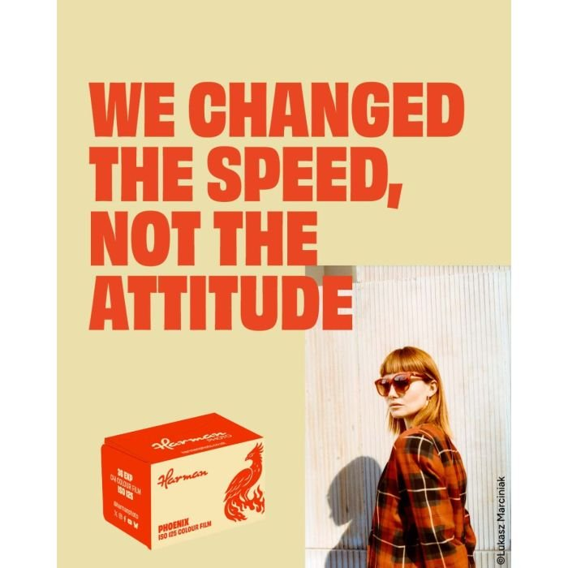
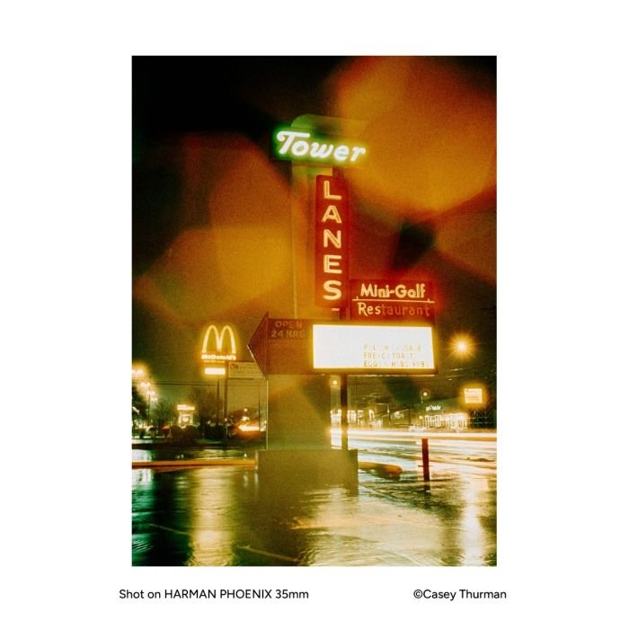
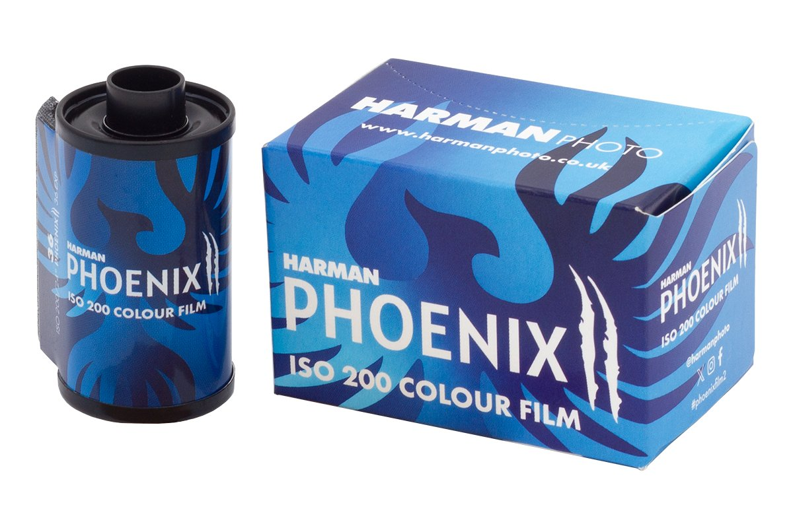

하만이 Phoenix 를 다시 내놓는다. 2023년에 나왔다가 단종된 오리지널 쪽이다. 달라진 것이 하나 있다. 캔에 적히는 숫자가 200 에서 125 로 내려간다.
왜 숫자를 내렸나
하만이 밝힌 이유는 짧다. 사람들이 그렇게 찍고 있어서다.
Phoenix 125 는 여러분이 오리지널에서 좋아했던(혹은 싫어했던) 특성을 그대로 지녔습니다. 다만 여러분이 실제로 이렇게 찍는다고 알려 주신 대로 감도를 125 로 새로 매겼습니다.
Harman Photo
Phoenix 200 을 쓴 사람들은 대체로 노출을 더 줬다. 100 이나 125 로 놓고 찍으면 그늘이 살고 색이 안정된다는 이야기가 커뮤니티에 쌓였다. 하만은 그 이야기를 캔에 반영했다.
박스 스피드는 누가 정하나
보통은 제조사가 정하고 사용자가 따라간다. 감도가 마음에 안 들면 사용자가 알아서 조정한다. 푸시니 풀이니 하는 말이 그래서 있다.
이번은 순서가 반대로 갔다. 사용자들의 노출 습관이 쌓여 제품 규격을 움직였다. 하만처럼 커뮤니티와 가까이 붙어 있는 회사라서 가능한 일이다.
실용적인 효과도 있다. 35mm 판은 DX 코드가 125 로 박혀 나온다. 자동으로 감도를 읽는 카메라에 물리면 이제 사용자가 손댈 것이 없다.

필름 자체는 그대로다
감도만 바뀌었다. 높은 대비, 굵은 입자, 튀는 색, 빛이 번지는 헐레이션까지 오리지널의 성격이 남는다. 좋아하는 사람과 싫어하는 사람이 갈리던 그 필름이다.
C-41 이 기본이다. E6 나 ECN-2 로도 현상이 된다고 하만이 밝혔다. 국내에서 이 두 공정을 받아 주는 곳은 많지 않으니 맡기기 전에 확인하는 편이 좋다.

Phoenix II 와 헷갈리지 않기
여기서 한 번 정리하고 가야 한다. 지금 하만의 Phoenix 는 둘이다.
이름이 비슷한 두 필름
- Phoenix 125 · 2023년 오리지널을 되살린 것. 감도만 200 에서 125 로 바뀌었다. 거친 성격 그대로
- Phoenix II · 2025년에 나온 후속작. ISO 200. 색 재현을 다듬고 베이스를 새로 만들었다
세대가 다른 두 제품이 나란히 팔린다. 거친 쪽을 원하면 125, 정돈된 쪽을 원하면 II 다.

가격과 국내 사정
하만은 이번에 컬러 라인 전반의 가격을 내렸다. 다만 공개된 것은 영국 소비자가다. 국내 판매가와 수입 시점은 아직 확인되지 않았다. 확인되는 대로 이 글에 붙이겠다.
필름값이 오르기만 하던 몇 해였다. 내린다는 소식은 그 자체로 드물다.